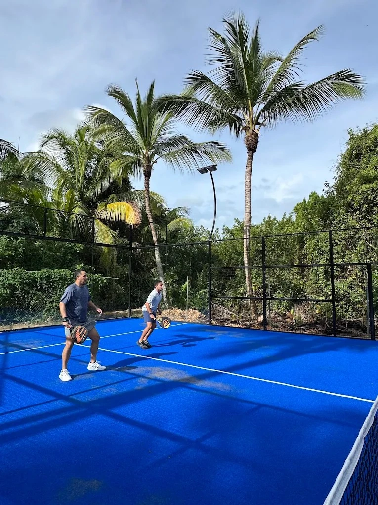

Indoor · Commercial Padel Facility
Multi-Court Indoor Padel Club
Commercial Club Project
A complete commercial padel court system with large tempered glass viewing areas for clubs, sports facilities and hospitality venues. Engineered for both indoor and outdoor commercial projects, with technical drawings, installation guidance and full project coordination from SPORTENVO.
A panoramic padel court is a professional padel court designed with large tempered glass sections on the side and back walls, providing clear sightlines around the full playing enclosure for players and spectators. It is the standard configuration for commercial padel clubs, sports facilities and hospitality venues worldwide. The SPORTENVO system uses 12 mm tempered glass, Q235B galvanized steel structure, welded mesh, professional padel turf and 200W IP65 LED lighting. Final configuration, foundation and structural requirements depend on the project site, indoor or outdoor environment and local engineering requirements.
Review the padel court dimensions and site planning guide to prepare site information before requesting a project proposal. Compare panoramic vs super panoramic to identify the right system for your project type.
Large glass viewing areas allow spectators to watch from outside the enclosure and give players an open, professional court experience. This visual openness is a key reason panoramic courts are the standard commercial choice for clubs and facilities.
The transparent glass enclosure integrates visually with club interiors, outdoor landscapes and hospitality environments. Courts can be positioned to be visible from lounge areas, reception spaces or spectator walkways depending on the venue design.
Suitable for outdoor and indoor commercial projects. Steel treatment, foundation and anchoring requirements are confirmed according to the project environment, climate and local engineering standards.
Structure, glass, turf, lighting, net, technical drawings and installation guidance can be coordinated as a single supply scope, reducing the number of vendors a project developer needs to manage.
The panoramic padel court system is appropriate across a wide range of commercial project types. Foundation, environmental requirements and site dimensions should be confirmed before specifying the configuration.
The standard configuration for single-court and multi-court commercial padel clubs requiring professional court systems with clear viewing areas for players and spectators.
Suitable for hospitality sports facilities where visual appearance and guest experience are important. Panoramic glass courts integrate well with premium resort and hotel environments.
Suitable for professional indoor or outdoor sports facilities adding padel to an existing commercial sports offering, where building integration and court visibility are planning factors.
For mixed-use, leisure and commercial developments planning dedicated padel facilities, where permanent court infrastructure is part of the long-term venue design.
For educational or institutional settings adding padel courts to existing outdoor or indoor sports areas. Foundation, access and structural interface should be confirmed for each specific site.
Commercial leisure operators planning padel as part of a wider sports and social venue can integrate panoramic courts into both indoor and outdoor settings subject to site and engineering review.
Core specifications for the SPORTENVO panoramic padel court system. Final configuration must be confirmed against project site conditions and local engineering requirements.
| Item | Specification |
|---|---|
| Court Size | 10 × 20 m playing area |
| Glass | 12 mm Tempered Safety Glass |
| Steel Structure | Q235B Steel |
| Steel Treatment | Hot-dip galvanized / project-specific surface finishing |
| Mesh System | Welded Steel Mesh |
| Lighting | 200W IP65 LED |
| Playing Surface | Professional Padel Artificial Turf |
| Application | Indoor / Outdoor Commercial Projects |
| Supply Type | Complete Court System |
| Customization | Project-specific colors and configurations available |
| Project Support | Technical drawings + installation guidance |
Structural member dimensions, anchoring, foundation and wind/load requirements are project-specific and must be confirmed against site conditions and local engineering requirements. The specifications above describe the verified system configuration and do not constitute a structural design for any specific project.
Forms the transparent playing enclosure walls and provides the panoramic viewing experience. Glass fixing and installation follow approved project drawings and local structural requirements.
Supports the glass panels, mesh sections and overall court enclosure. Hot-dip galvanized treatment provides corrosion protection for commercial indoor and outdoor projects.
Integrated with the steel frame as part of the complete playing enclosure in the sections where glass panels are not used.
IP65-rated LED lighting for commercial outdoor and indoor court use. Supports day and evening operation at professional commercial standards.
Professional artificial padel turf supplied as part of the complete court system. Final turf specification confirmed according to project requirements.
Complete net system, posts and entrance components included in the confirmed supply scope.
SPORTENVO panoramic courts use 12 mm tempered safety glass as the transparent wall system required for modern panoramic padel court design. The glass provides clear court visibility for players, spectators and commercial venues while meeting the structural requirements of a commercial padel enclosure.
Glass fixing details, installation requirements and any applicable local safety glazing standards must be confirmed according to the approved project configuration and location.
Quality & Certifications →Tempered Safety Glass
Panoramic playing enclosure
Clear spectator sightlines
Project-specific installation
The panoramic court uses Q235B steel with hot-dip galvanized corrosion protection suitable for professional commercial padel projects. Structural configuration, surface finishing and anchoring should be confirmed according to indoor or outdoor use, project location, climate, foundation condition and local structural requirements.
Both systems are professional commercial padel courts with tempered glass. The choice depends on the project type, venue positioning and visual priorities. Review the full panoramic vs super panoramic comparison guide before finalising the specification.
| Factor | Panoramic | Super Panoramic |
|---|---|---|
| Visual Openness | Professional panoramic glass enclosure | More open presentation — larger glass area |
| Steel Framing Around Glass | Standard commercial framing | Reduced framing — more glass visible |
| Typical Project Use | Commercial clubs, outdoor projects | Premium clubs, showcase indoor venues |
| Indoor / Outdoor | Both — outdoor widely used | Often chosen for indoor premium venues |
| Venue Positioning | Professional commercial standard | Premium viewing experience |
| Customization | Project-specific options | Project-specific options |
| Engineering Review | Required — site-specific | Required — site-specific |
The panoramic padel court is the standard permanent commercial court for clubs, resorts and sports facilities. It is distinct from the mobile, high-wind and super panoramic systems in structure, application and site requirements. Review the full padel court system overview to compare all options before specifying.
| Factor | Panoramic Court | Mobile Court | FORCE-HX Court |
|---|---|---|---|
| Primary Use | Permanent commercial clubs, resorts, sports centers | Leased sites, relocatable projects | Coastal, hurricane and high-wind environments |
| Foundation | Concrete or paved base — standard for permanent sites | Modular steel foundation — reduces permanent civil work | Site-specific engineered foundation required |
| Steel Structure | Q235B hot-dip galvanized steel | Modular steel base system for relocation | Heavy-duty reinforced structural concept |
| Wind Design | Standard commercial — site conditions confirmed per project | Standard commercial — site conditions confirmed per project | Engineered for extreme wind exposure up to 136.8 MPH |
| Glass | 12 mm tempered safety glass | 12 mm tempered safety glass | 12 mm tempered safety glass — reinforced anchoring |
| Relocation | Permanent installation | Designed for future dismantling and relocation | Permanent installation |
| Typical Buyer | Club operators, resorts, sports facility developers | Operators on leased sites or temporary venues | Coastal resort, island or hurricane-zone projects |
All systems require project-specific engineering review. The comparison above describes typical application differences, not guaranteed specifications for any individual project.
A panoramic padel court requires a stable, level foundation capable of supporting the court structure and maintaining the required playing surface. For permanent commercial projects, a concrete or paved foundation is commonly used.
For selected leased sites or projects where reducing permanent civil work matters, SPORTENVO's modular steel foundation may be considered after site and engineering review. Review the modular foundation system for suitability criteria.
Explore Modular Foundation →Yes. Panoramic padel courts can be combined with fixed or retractable roof systems for projects requiring weather protection or improved year-round usability. Roof design must consider court layout, local wind conditions, structural loads, drainage, project dimensions and local building requirements.
Adding a roof to an existing court requires a separate structural engineering review based on the specific project and site conditions.
Before specifying a panoramic padel court, buyers should confirm the following site factors. These are general planning considerations, not verified specifications for any specific project.
Total available area including the 10 × 20 m court footprint plus run-off zones, spectator clearance, access routes and any planned social or service areas. Review the dimensions guide.
Ground stability, bearing capacity, drainage and settlement risk are all relevant to the foundation design. Soil conditions and existing surfaces should be reviewed by the project structural engineer before the foundation type is selected.
Indoor installations involve ceiling clearance, structural interface and lighting planning. Outdoor projects require drainage, surface durability and consideration of environmental exposure including wind, humidity and UV conditions.
Wind exposure, coastal proximity, humidity and climate all affect structural material selection, anchoring requirements and long-term maintenance planning. For high-wind or coastal projects, review the FORCE-HX system and high-wind planning guide.
Outdoor courts require surface drainage planning to prevent water accumulation on the playing surface and around the court base. Drainage should be addressed in the site and foundation design.
Local building codes, planning rules, structural engineering standards and any applicable glazing or sports facility regulations should be reviewed before confirming the final court configuration.
Confirm project country, site dimensions, indoor or outdoor application, foundation condition and environmental requirements so the court configuration can be selected.
Glass, steel, turf, lighting, optional foundation and optional roof systems confirmed according to the project scope, site conditions and buyer requirements.
Prepare or verify the approved foundation according to structural requirements. Review the modular foundation option for sites where reduced permanent civil work is required.
Court components manufactured, inspected, export-packed and shipped with technical documentation according to the confirmed project schedule.
Steel structure, glass panels, mesh, turf and lighting installed following the approved technical drawings. Installation guidance is provided as part of the standard supply scope.
Verify alignment, glass, turf, lighting and documentation before the court enters commercial use.
Real project photography showing SPORTENVO panoramic padel court installations across indoor and outdoor commercial venues.

Commercial Club Project

Use the following checklist to assess whether a panoramic padel court system is the right choice for your venue before requesting a project proposal.
Explore real SPORTENVO commercial padel court projects across different venue types and environments — rooftop, indoor, wind-exposed and coastal installations.
Rooftop commercial padel installation in Malaysia.
View Case Study →Five outdoor courts for a coastal hospitality venue.
View Case Study →The exact court model installed in each case study above has not been independently verified as the Panoramic system. Links are provided as real commercial project references.
A professional padel court with large tempered glass sections on the side and back walls, providing clear sightlines for spectators and players. The SPORTENVO system uses 12 mm tempered glass, Q235B galvanized steel, welded mesh, professional padel turf and 200W IP65 LED lighting for commercial indoor and outdoor projects.
Both use 12 mm tempered glass. A super panoramic court has reduced steel framing, providing a more open and transparent visual appearance. Panoramic courts are the standard choice for commercial clubs and outdoor projects. See the full comparison guide for project-specific guidance.
The standard court playing area is 10 × 20 m. Total site dimensions including run-off zones, access and spectator clearance depend on the specific project layout. See the dimensions guide for site planning requirements.
Yes. Panoramic padel courts are widely used for outdoor commercial projects. Steel treatment, foundation, anchoring and structural requirements should be confirmed according to the project climate, wind exposure and local engineering requirements. For exposed coastal or high-wind environments, a reinforced court system may be more appropriate — see the full court system comparison.
Yes. Project-specific colors, turf options and lighting configurations can be discussed during the quotation process. Customization options depend on project requirements, quantities and confirmed specifications.
A stable, level foundation capable of supporting the court structure is required. Concrete or paved foundations are standard for permanent commercial projects. For leased or flexible sites, SPORTENVO's modular steel foundation may be an option subject to site and engineering review.
Country and city, number of courts, site dimensions, indoor or outdoor application, foundation condition, roof requirements, environmental conditions and target timeline. Site photos or drawings are helpful.
Technical drawings and installation guidance are included in the standard supply scope. On-site installation support depends on project location and scope. Installation arrangements should be confirmed during the quotation process. View engineering and manufacturing details →
More open glass design for premium clubs and showcase venues.
View Super Panoramic →Modular steel foundation system for leased sites and relocatable projects.
View Mobile Court →Reinforced court system for coastal and high-wind project environments.
View FORCE-HX →Side-by-side comparison to select the right system for your project.
Read Guide →Standard dimensions and space requirements for commercial padel projects.
Read Guide →Project cost factors for commercial padel developments including court, foundation and logistics.
Read Guide →Share your project country and city, venue type, number of courts, site dimensions, indoor or outdoor setting, foundation condition, environmental conditions, roof requirements and target schedule. SPORTENVO can help confirm the right court configuration, project scope and technical support for your venue.
Country · Venue Type · Number of Courts · Site Dimensions · Indoor or Outdoor